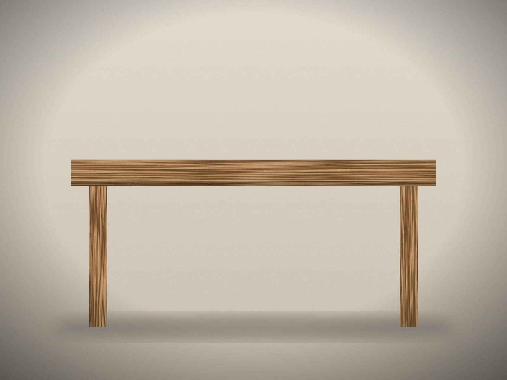
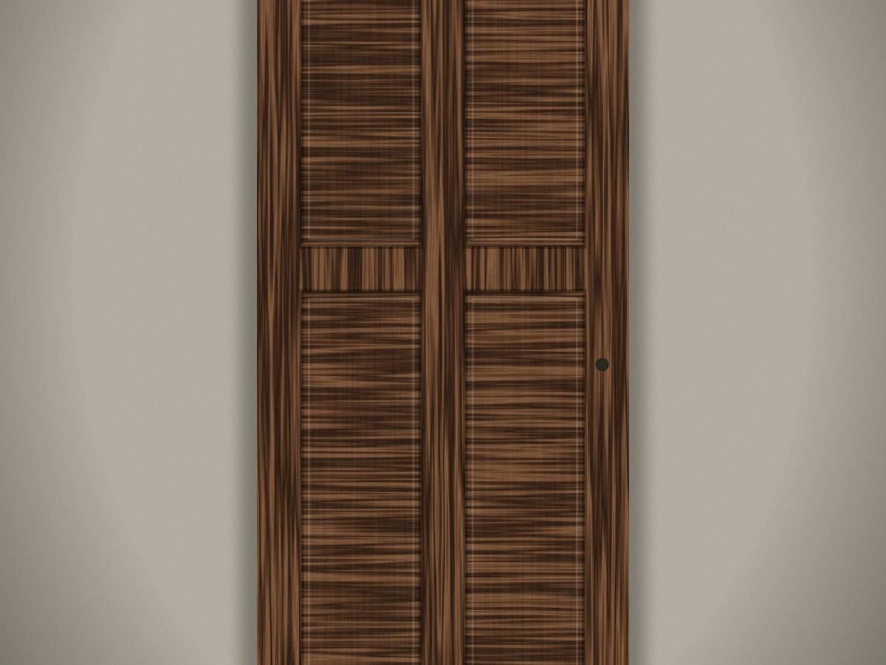

Windows for a historic library
Surveying, repairing and reproducing the wooden windows of a public library, so the building could keep its original character.
Windows for public buildings, restoration of old houses, tables and doors made for particular rooms. Each project began with a conversation.
5 projects
Surveying, repairing and reproducing the wooden windows of a public library, so the building could keep its original character.

Tall classroom windows, repaired and renewed so that a school building could keep its rhythm and its light.

Windows and an entrance door for a traditional family house — repaired where possible, rebuilt where necessary.

A long dining table, sized to the room and to the family around it.

A new entrance door in solid wood, drawn to the proportions of an existing house.
No projects in this category yet — but we would be glad to build the first one with you.
You don't need a finished drawing.
Start with an idea.
Serbia · Switzerland · Europe